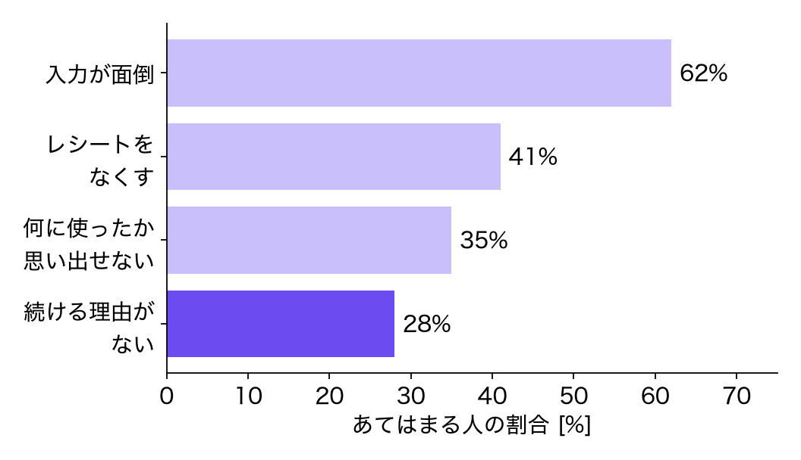
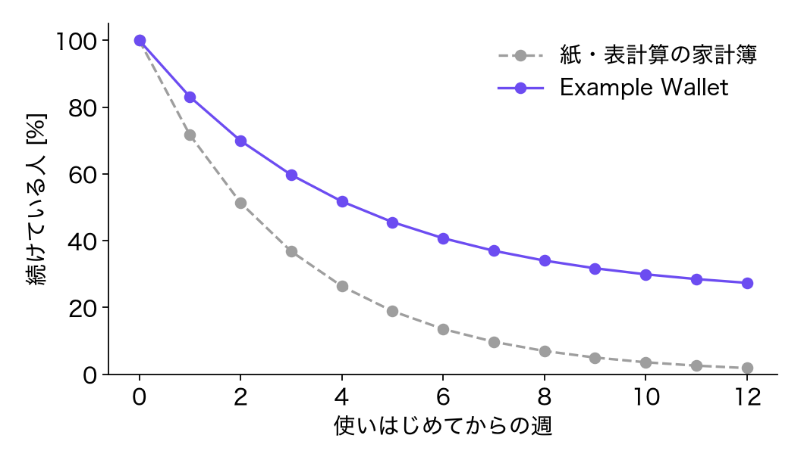

家計簿を，
続けられるものに．
続けられるものに．
Example Wallet のご紹介
2026/11
2026/11
家計簿，続かない
始めた人の 6 割が，「入力が面倒」でやめています

家計簿をやめた経験のある 400 人への調査（複数回答．架空）
撮るだけで，記録が終わる
レシートを撮ると，品目と金額が自動で入ります
- 1 件の記録が 40 秒 → 3 秒に
- カードの明細も自動で取り込み
- 現金とカードを 1 つの画面で
- 月末に「何に使いすぎたか」を 1 枚でお知らせ
12 週間後も，4 人に 1 人が続けている
紙や表計算の家計簿より，続ける人が多い

試用に参加した 1,200 人の記録（架空）
料金プラン
まずは無料で，1 か月試せます
| プラン | 月額 | できること |
|---|---|---|
| フリー | 0 円 | レシートの読み取り（月 30 枚まで） |
| スタンダード | 300 円 | 読み取り無制限，カードの取り込み |
| ファミリー | 500 円 | 家族 4 人で共有 |
お問い合わせ：hello@example.com